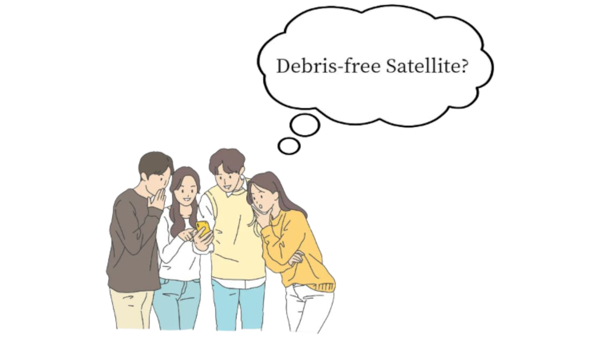
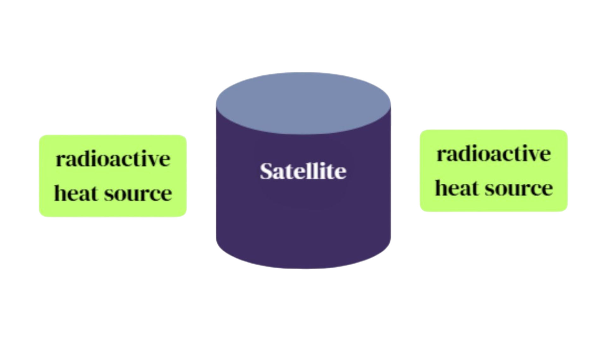

Ch1.United in our diversity
:Understanding differences, creating harmony
Debris-free Satellite?

We originally bonded over a shared
passion for aerospace engineering.
After developing a debris-free satellite model,
we faced a critical question: could we,
as high school students, actually turn
this concept into reality?
passion for aerospace engineering.
After developing a debris-free satellite model,
we faced a critical question: could we,
as high school students, actually turn
this concept into reality?
